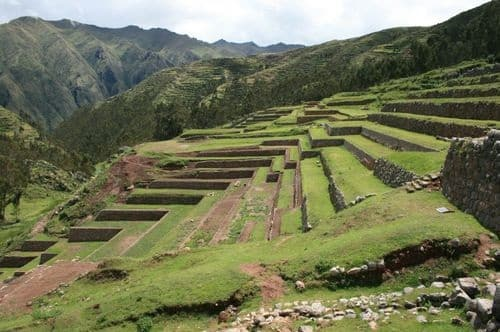

Cultura Chavin
ECONOMÍA CHAVÍN
Con un completo engranaje productivo de las zonas andinas, costeras y selváticas, la economía chavín logró desarrollar permanentemente el área agrícola, respaldada por la pesca, la caza y el comercio.
La agricultura en la economía chavín
Básicamente la actividad agraria constituyó el eje principal de la economía chavín, alcanzando una alta tecnología que permitió impulsar el cultivo del maíz en las sierras, como el de otros vegetales en las costas. Así, sembraron papa, batata, oca, frijol, maní, ají, onoto, quinua, palta, papa amarga, pepino y tomate.
Al respecto, para aumentar la productividad, los agricultores chavines emplearon técnicas agrícolas avanzadas, como la construcción de andenes de cultivo, un sistema caracterizado por plataformas escalonadas en las laderas de las montañas y superficies inclinadas, logrando optimizar el aprovechamiento del agua.
economía chavín andenes Además, usaron la chaquitaclla o arado de pie, un palo puntoso con el pico encorvado de piedra o de metal, que tenía dos mangos, uno para sujetar la herramienta con las manos, y el otro para apoyar el pie y hundirla en la tierra, que al ser inclinada facilitaba la creación de los surcos para los canales de plantación. Aparte, con el producto de las siembras de algodón, confeccionaron vestidos, mantas, bordados y tapices.
Convirtiéndose en la agricultura más moderna de su época, el maíz y sus derivados como la chicha de jora, formaron una gran fuente de ingresos para la cultura chavín.
Otras actividades de la economía chavin
Es importante recalcar, que a pesar de la prolífera actividad agrícola, en el sistema de la economía chavín se mantuvieron productivos otros rubros como la caza de zorros o venados, la pesca de peces o mariscos, e incluso la explotación ganadera con la cría de cobayas y camélidos andinos, mejor conocidos como llamas o alpacas. De igual forma, sacaron provecho de la metalurgia, la alfarería y la orfebrería.
Otro de los aspectos resaltantes de esta cultura en materia económica, fue el logro y posterior perfeccionamiento del sistema del trueque, implementando una modalidad de pago, bien en especies sagradas como el maíz o a través de un intercambio que requería la fuerza de trabajo, características que posteriormente se generalizaron en toda el área andina. Igualmente, los pastores, pescadores y campesinos realizaban intercambio comercial de sus productos con los pueblos serranos, costeros y amazónicos.
Absolutamente todos estos elementos que estimularon el avance de la economía chavín, hicieron posible la construcción de ciudades y centros ceremoniales, sin embargo, la decadencia de esta cultura andina, está más ligada a factores de estancamiento productivos, que a una intervención militar por parte de otras civilizaciones.
Correo de contacto